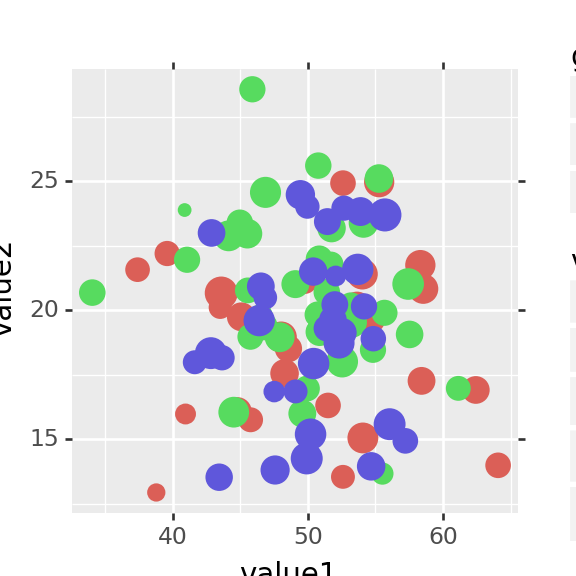
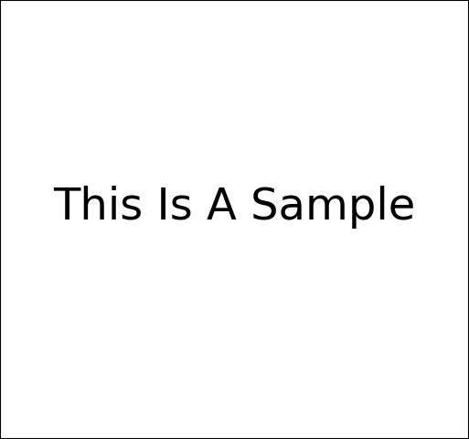
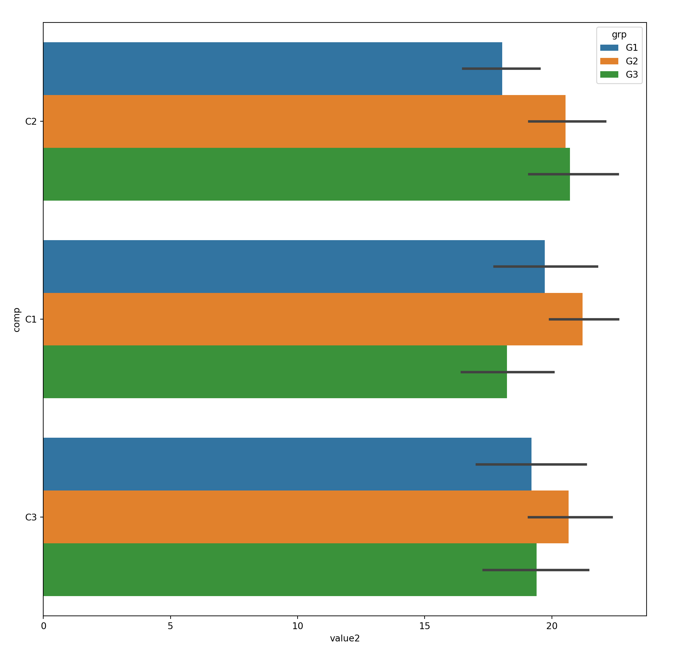
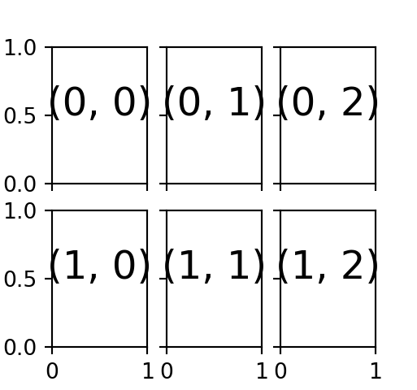
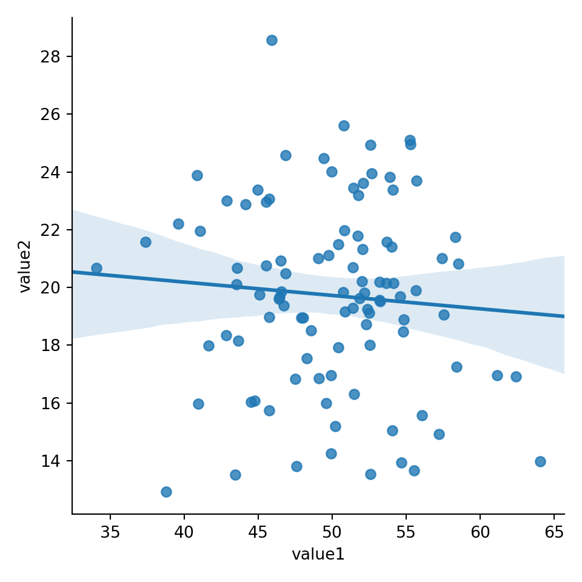
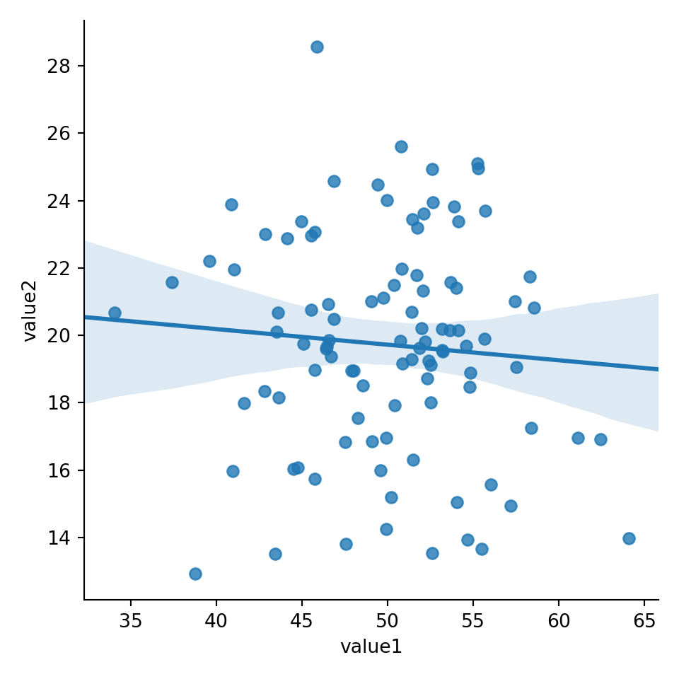
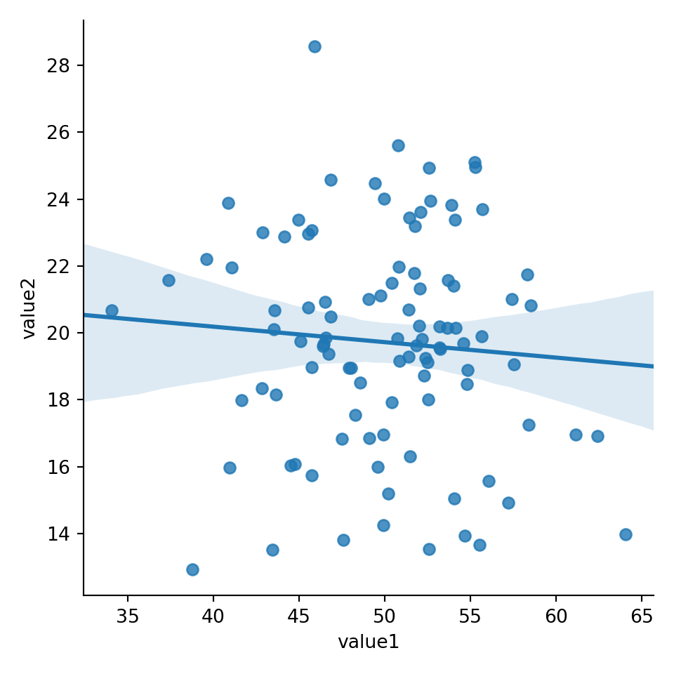

14 matplotlib
from IPython.core.display import display, HTML
display(HTML("<style>.container { width:75% !important; margin-left:350px; }</style>"))
#%matplotlib inline## <IPython.core.display.HTML object>import numpy as np
import pandas as pd
import matplotlib.pyplot as plt
import math
import seaborn as sns
pd.set_option( 'display.notebook_repr_html', False) # render Series and DataFrame as text, not HTML
pd.set_option( 'display.max_column', 10) # number of columns
pd.set_option( 'display.max_rows', 10) # number of rows
pd.set_option( 'display.width', 90) # number of characters per row14.1 Library
14.2 Sample Data
This chapter uses the sample data generate with below code. The idea is to simulate two categorical-alike feature, and two numeric value feature:
- com is random character between ?C1?, ?C2? and ?C3?
- dept is random character between ?D1?, ?D2?, ?D3?, ?D4? and ?D5?
- grp is random character with randomly generated ?G1?, ?G2?
- value1 represents numeric value, normally distributed at mean 50
- value2 is numeric value, normally distributed at mean 25
n = 200
comp = ['C' + i for i in np.random.randint( 1,4, size = n).astype(str)] # 3x Company
dept = ['D' + i for i in np.random.randint( 1,6, size = n).astype(str)] # 5x Department
grp = ['G' + i for i in np.random.randint( 1,3, size = n).astype(str)] # 2x Groups
value1 = np.random.normal( loc=50 , scale=5 , size = n)
value2 = np.random.normal( loc=20 , scale=3 , size = n)
value3 = np.random.normal( loc=5 , scale=30 , size = n)
mydf = pd.DataFrame({
'comp':comp,
'dept':dept,
'grp': grp,
'value1':value1,
'value2':value2,
'value3':value3 })
mydf.head()## comp dept grp value1 value2 value3
## 0 C3 D1 G2 58.001073 20.797796 4.565181
## 1 C2 D4 G2 47.122054 20.691133 36.084163
## 2 C3 D5 G1 49.497686 15.715835 7.232685
## 3 C1 D3 G2 50.129623 26.790262 -6.875583
## 4 C3 D3 G1 51.620032 23.704337 11.909618## <class 'pandas.core.frame.DataFrame'>
## RangeIndex: 200 entries, 0 to 199
## Data columns (total 6 columns):
## comp 200 non-null object
## dept 200 non-null object
## grp 200 non-null object
## value1 200 non-null float64
## value2 200 non-null float64
## value3 200 non-null float64
## dtypes: float64(3), object(3)
## memory usage: 9.5+ KB14.3 MATLAB-like API
- The good thing about the pylab MATLAB-style API is that it is easy to get started with if you are familiar with MATLAB, and it has a minumum of coding overhead for simple plots.
- However, I’d encourrage not using the MATLAB compatible API for anything but the simplest figures.
- Instead, I recommend learning and using matplotlib’s object-oriented plotting API. It is remarkably powerful. For advanced figures with subplots, insets and other components it is very nice to work with.
14.3.1 Sample Data
14.3.2 Single Plot
14.3.3 Multiple Subplots
Each call lto subplot() will create a new container for subsequent plot command
## <Figure size 267.36x250 with 0 Axes>## <matplotlib.axes._subplots.AxesSubplot object at 0x000000000680CCF8>## [<matplotlib.lines.Line2D object at 0x000000000871B470>]## <matplotlib.axes._subplots.AxesSubplot object at 0x000000000871B2B0>## [<matplotlib.lines.Line2D object at 0x0000000008754D68>]
14.4 Object-Oriented API
14.4.1 Sample Data
14.4.2 Single Plot
One figure, one axes
fig = plt.figure()
axes = fig.add_axes([0,0,1,1]) # left, bottom, width, height (range 0 to 1)
axes.plot(x, y, 'r')## [<matplotlib.lines.Line2D object at 0x000000000873F6A0>]## Text(0.5, 0, 'x')## Text(0, 0.5, 'y')## Text(0.5, 1.0, 'title')
14.4.3 Multiple Axes In One Plot
- This is still considered a single plot, but with multiple axes
fig = plt.figure()
ax1 = fig.add_axes([0, 0, 1, 1]) # main axes
ax2 = fig.add_axes([0.2, 0.5, 0.4, 0.3]) # inset axes
ax1.plot(x,y,'r')## [<matplotlib.lines.Line2D object at 0x0000000006EF9208>]## Text(0.5, 0, 'x')## Text(0, 0.5, 'y')## [<matplotlib.lines.Line2D object at 0x0000000009787470>]## Text(0.5, 0, 'y')## Text(0, 0.5, 'x')## Text(0.5, 1.0, 'insert title')14.4.4 Multiple Subplots
- One figure can contain multiple subplots
- Each subplot has one axes
14.4.4.1 Simple Subplots - all same size
- subplots() function return axes object that is iterable.
Single Row Grid
Single row grid means axes is an 1-D array. Hence can use for to iterate through axes
## (3,)for ax in axes:
ax.plot(x, y, 'r')
ax.set_xlabel('x')
ax.set_ylabel('y')
ax.set_title('title')
ax.text(0.2,0.5,'One')## [<matplotlib.lines.Line2D object at 0x0000000006FE0C50>]
## Text(0.5, 0, 'x')
## Text(0, 0.5, 'y')
## Text(0.5, 1.0, 'title')
## Text(0.2, 0.5, 'One')
## [<matplotlib.lines.Line2D object at 0x0000000006FEC240>]
## Text(0.5, 0, 'x')
## Text(0, 0.5, 'y')
## Text(0.5, 1.0, 'title')
## Text(0.2, 0.5, 'One')
## [<matplotlib.lines.Line2D object at 0x0000000006FEC7B8>]
## Text(0.5, 0, 'x')
## Text(0, 0.5, 'y')
## Text(0.5, 1.0, 'title')
## Text(0.2, 0.5, 'One')
Multiple Row Grid
Multile row grid means axes is an 2-D array. Hence can use two levels of for loop to iterate through each row and column
## (2, 3)for i in range(axes.shape[0]):
for j in range(axes.shape[1]):
axes[i, j].text(0.5, 0.5, str((i, j)),
fontsize=18, ha='center')## Text(0.5, 0.5, '(0, 0)')
## Text(0.5, 0.5, '(0, 1)')
## Text(0.5, 0.5, '(0, 2)')
## Text(0.5, 0.5, '(1, 0)')
## Text(0.5, 0.5, '(1, 1)')
## Text(0.5, 0.5, '(1, 2)')
14.4.4.2 Complicated Subplots - different size
- GridSpec specify grid size of the figure
- Manually specify each subplot and their relevant grid position and size
## <Figure size 500x500 with 0 Axes>## <matplotlib.axes._subplots.AxesSubplot object at 0x0000000007168DD8>## <matplotlib.axes._subplots.AxesSubplot object at 0x0000000007195F60>## <matplotlib.axes._subplots.AxesSubplot object at 0x00000000071D32B0>## <matplotlib.axes._subplots.AxesSubplot object at 0x0000000006FD5B00>
## <Figure size 500x500 with 0 Axes>## <matplotlib.axes._subplots.AxesSubplot object at 0x0000000007617DA0>## <matplotlib.axes._subplots.AxesSubplot object at 0x00000000076360F0>## <matplotlib.axes._subplots.AxesSubplot object at 0x0000000007663588>
-1 means last row or column
## <Figure size 600x600 with 0 Axes>grid = plt.GridSpec(4, 4, hspace=0.4, wspace=1.2)
plt.subplot(grid[:-1, 0 ]) # row 0 till last row (not including last row), col 0## <matplotlib.axes._subplots.AxesSubplot object at 0x000000000762D5C0>## <matplotlib.axes._subplots.AxesSubplot object at 0x000000000760E668>## <matplotlib.axes._subplots.AxesSubplot object at 0x00000000071C8DD8>
14.4.5 Figure Customization
14.4.5.1 Avoid Overlap - Use tight_layout()
Sometimes when the figure size is too small, plots will overlap each other.
- tight_layout() will introduce extra white space in between the subplots to avoid overlap.
- The figure became wider.
fig, axes = plt.subplots( nrows=1,ncols=2)
for ax in axes:
ax.plot(x, y, 'r')
ax.set_xlabel('x')
ax.set_ylabel('y')
ax.set_title('title')## [<matplotlib.lines.Line2D object at 0x00000000097D5AC8>]
## Text(0.5, 0, 'x')
## Text(0, 0.5, 'y')
## Text(0.5, 1.0, 'title')
## [<matplotlib.lines.Line2D object at 0x0000000007025940>]
## Text(0.5, 0, 'x')
## Text(0, 0.5, 'y')
## Text(0.5, 1.0, 'title')
14.4.5.2 Avoid Overlap - Change Figure Size
fig, axes = plt.subplots( nrows=1,ncols=2,figsize=(12,3))
for ax in axes:
ax.plot(x, y, 'r')
ax.set_xlabel('x')
ax.set_ylabel('y')
ax.set_title('title')## [<matplotlib.lines.Line2D object at 0x0000000007168F98>]
## Text(0.5, 0, 'x')
## Text(0, 0.5, 'y')
## Text(0.5, 1.0, 'title')
## [<matplotlib.lines.Line2D object at 0x00000000097CE198>]
## Text(0.5, 0, 'x')
## Text(0, 0.5, 'y')
## Text(0.5, 1.0, 'title')
14.4.5.3 Text Within Figure
## Text(0.5, 0.5, 'This Is A Sample')## Traceback (most recent call last):
## File "C:\ProgramData\Anaconda3\lib\site-packages\matplotlib\backends\backend_qt5.py", line 505, in _draw_idle
## self.draw()
## File "C:\ProgramData\Anaconda3\lib\site-packages\matplotlib\backends\backend_agg.py", line 388, in draw
## self.figure.draw(self.renderer)
## File "C:\ProgramData\Anaconda3\lib\site-packages\matplotlib\artist.py", line 38, in draw_wrapper
## return draw(artist, renderer, *args, **kwargs)
## File "C:\ProgramData\Anaconda3\lib\site-packages\matplotlib\figure.py", line 1709, in draw
## renderer, self, artists, self.suppressComposite)
## File "C:\ProgramData\Anaconda3\lib\site-packages\matplotlib\image.py", line 135, in _draw_list_compositing_images
## a.draw(renderer)
## File "C:\ProgramData\Anaconda3\lib\site-packages\matplotlib\artist.py", line 38, in draw_wrapper
## return draw(artist, renderer, *args, **kwargs)
## File "C:\ProgramData\Anaconda3\lib\site-packages\matplotlib\axes\_base.py", line 2607, in draw
## self._update_title_position(renderer)
## File "C:\ProgramData\Anaconda3\lib\site-packages\matplotlib\axes\_base.py", line 2548, in _update_title_position
## ax.xaxis.get_ticks_position() in choices):
## File "C:\ProgramData\Anaconda3\lib\site-packages\matplotlib\axis.py", line 2146, in get_ticks_position
## self._get_ticks_position()]
## File "C:\ProgramData\Anaconda3\lib\site-packages\matplotlib\axis.py", line 1832, in _get_ticks_position
## major = self.majorTicks[0]
## IndexError: list index out of range
14.4.6 Axes Customization
14.4.6.1 Y-Axis Limit
## <matplotlib.axes._axes.Axes object at 0x0000000007136588>
14.4.6.2 Text Within Axes
fig, ax = plt.subplots(2, 3, sharex='col', sharey='row')
for i in range(2):
for j in range(3):
ax[i, j].text(0.5, 0.5, str((i, j)),
fontsize=18, ha='center')## Text(0.5, 0.5, '(0, 0)')
## Text(0.5, 0.5, '(0, 1)')
## Text(0.5, 0.5, '(0, 2)')
## Text(0.5, 0.5, '(1, 0)')
## Text(0.5, 0.5, '(1, 1)')
## Text(0.5, 0.5, '(1, 2)')
## Text(0.5, 0.5, 'one')
14.4.6.3 Share Y Axis Label

14.4.6.4 Create Subplot Individually
Each call lto subplot() will create a new container for subsequent plot command
## <matplotlib.axes._subplots.AxesSubplot object at 0x0000000006C50908>## Text(0.5, 0.5, 'one')## <matplotlib.axes._subplots.AxesSubplot object at 0x0000000009AE2A20>## Text(0.5, 0.5, 'eight')
Iterate through subplots (ax) to populate them
fig, ax = plt.subplots(2, 3, sharex='col', sharey='row')
for i in range(2):
for j in range(3):
ax[i, j].text(0.5, 0.5, str((i, j)),
fontsize=18, ha='center')## Text(0.5, 0.5, '(0, 0)')
## Text(0.5, 0.5, '(0, 1)')
## Text(0.5, 0.5, '(0, 2)')
## Text(0.5, 0.5, '(1, 0)')
## Text(0.5, 0.5, '(1, 1)')
## Text(0.5, 0.5, '(1, 2)')
14.5 Histogram
## (array([ 2., 4., 10., 16., 35., 38., 31., 27., 22., 6., 6., 3.]), array([37.09329803, 39.25349925, 41.41370047, 43.57390169, 45.73410291,
## 47.89430413, 50.05450535, 52.21470657, 54.37490779, 56.53510901,
## 58.69531023, 60.85551145, 63.01571267]), <a list of 12 Patch objects>)
14.6 Scatter Plot
## <matplotlib.collections.PathCollection object at 0x0000000009990EB8>
14.7 Bar Chart
## comp value1
## 0 C1 3988.891405
## 1 C2 3007.230028
## 2 C3 3017.883718## <BarContainer object of 3 artists>## Text(0.5, 0, 'Company')## Text(0, 0.5, 'Sum of Value 1')